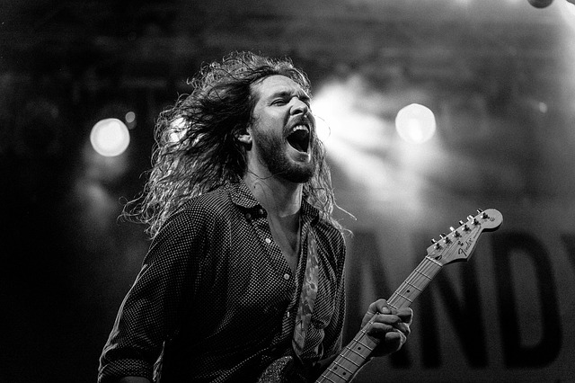

Historia del Rock Latinoamérica...
El Rock cantado en español es la música rock compuesta e interpretada en castellano. A diferencia del rock en inglés, el rock en español ha logrado tener éxito mundial en pocas ocasiones, y muchas veces ni siquiera entre países de habla hispana. Por eso el rock en castellano se ha desarrollado de manera heterogénea en las distintas naciones hispanohablantes; quedando así la música de muchas bandas para uso casi exclusivamente nacional hasta la llegada de la globalización de contenidos multimedia acentuada por la generalización de internet y desarrollada especialmente en el siglo XXI. Por otro lado, la escena de heavy metal totalmente ajena a la escena del «Rock en tu idioma» estando influida por el hard rock de la década anterior y del movimiento que se conoció como la nueva ola del heavy metal británico (abreviado en inglés NWOBHM), iba tomando forma rápidamente con bandas como Riff formada por el líder de Pappo's Blues, Kraken o Barón Rojo que además obtuvo cierto éxito en Europa al versionar algunos de sus temas al inglés. Aunque algunas bandas de metal encontrarían su cúspide de popularidad durante los años venideros.
La Irrupción del Rock Alternativo
Precisamente Ángeles del Infierno que había desarrollado su carrera en la década anterior comenzaría a ofrecer actuaciones en Hispanoamérica a partir de los noventa.Y es que por aquel entonces en la escena anglosajona, el heavy metal estaba sufriendo una recesión en favor de nuevos estilos como el grunge. Sin embargo, tardarían algo más los estilos de rock alternativos en ser dominantes en la escena hispanohablante, pues justo cuando transcurría la eclosión del grunge en EE. UU, el heavy metal en castellano alcanzó nuevas cotas de popularidad con el éxito de Rata Blanca. Por supuesto otros estilos menos clásicos surgieron como el death metal de Brujería, el thrash metal de Ekhymosis o Transmetal que su estilo se ubicaba entre ambos géneros. También fue notorio el resurgimiento del punk en el mundo anglosajón, al que se unieron rápidamente bandas (aunque la productiva era del punk en castellano quedaba muy cerca) como Attaque 77, Todos tus muertos apostando más por el hardcore punk o Ska-P centrada en el ska punk.Es notable decir que el ska fue un estilo que tuvo bastante presencia también con otras bandas como Desorden Público,King Changó que catalogaría su estilo de latin ska, Tijuana No! o Los Rabanes.